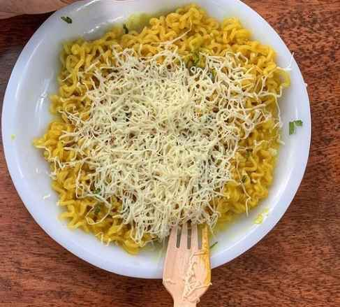

Cheese Maggi

Why Cheese Maggi
Cheese Maggi is a popular and easy-to-make variation of the classic Maggi masala noodles, featuring an indulgent cheesy twist. It's a quick and comforting meal or snack that's loved by people of all ages. The combination of savory Maggi seasoning, soft noodles, and gooey melted cheese creates a rich and satisfying flavor that's hard to resist.
Ingredients
- 1 packet of Maggi masala noodles
- 1/2 cup of grated cheese (cheddar, mozzarella, or a combination)
- 1 tablespoon of oil
- 1/2 cup of chopped vegetables (optional, such as onions, carrots, or peas)
- Salt and pepper to taste
Procedure:-
- Cook the Maggi noodles according to the package directions.
- While the noodles are cooking, heat the oil in a pan over medium heat.
- Add the chopped vegetables (if using) and cook until softened, about 5 minutes.
- Drain the cooked noodles and add them to the pan with the vegetables.
- Stir in the Maggi masala seasoning and cook for 1 minute, until fragrant.
- Sprinkle the grated cheese over the noodles and stir gently until melted.
- Season with salt and pepper to taste.
- Serve hot and enjoy!